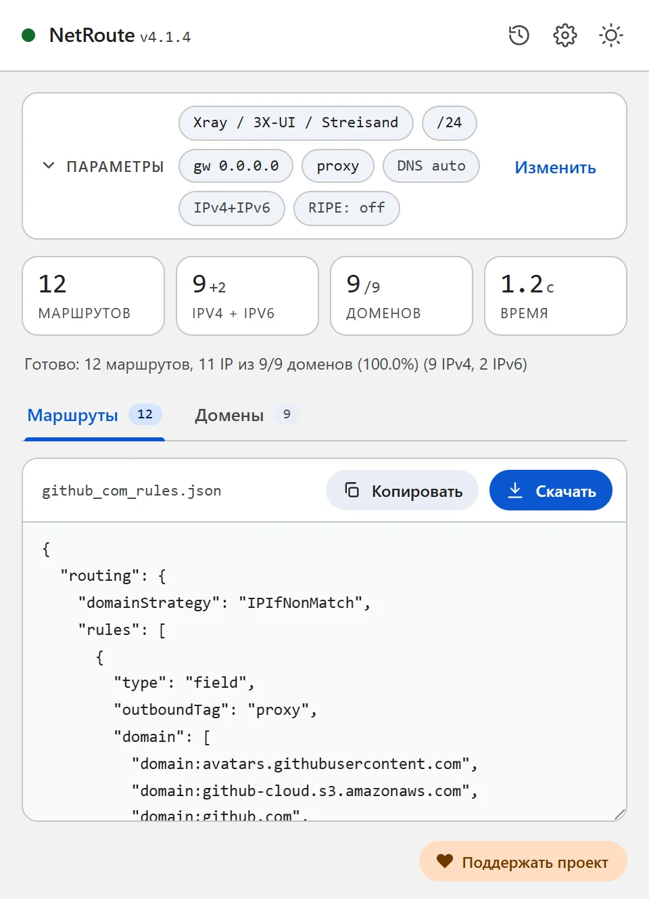
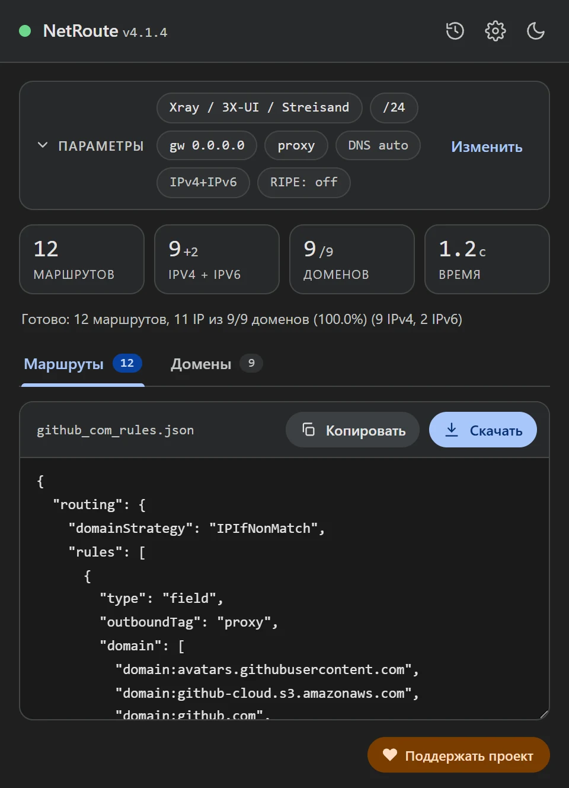

Правила маршрутизации Xray из любого сайта: Xray-core, 3X-UI, v2rayN
Обновлено · NetRoute версии 4.1.4
Xray направляет соединения по правилам routing.rules: списки доменов и адресов и тег исходящего подключения. NetRoute собирает такие правила со страницы сайта в двух вариантах: фрагмент конфига Xray-core — он же подходит для панели 3X-UI, где конфиг Xray редактируется как JSON, — и файл для импорта правил в v2rayN.
Что внутри файла
Формат «Xray / 3X-UI / Streisand» — фрагмент конфига Xray-core с секцией routing. Домены и сети записаны двумя правилами, у каждого свой список и общий outboundTag:
{
"routing": {
"domainStrategy": "IPIfNonMatch",
"rules": [
{ "type": "field", "outboundTag": "proxy", "domain": ["domain:github.com", "domain:githubusercontent.com"] },
{ "type": "field", "outboundTag": "proxy", "ip": ["140.82.112.0/20", "185.199.108.0/22", "2606:50c0::/32"] }
]
}
}domain:имя— по документации Xray это сам домен и его поддомены. Список свёрнут: если найденыapi.github.comиgithub.com, остаётсяgithub.com;www.отброшен. В него входят все домены скана, в том числе не разрешённые в IP.ip— адреса в форме CIDR; это те же агрегированные сети, что NetRoute выдаёт маршрутами для роутера, IPv4 и IPv6.outboundTag— тег исходящего подключения из поля Интерфейс в NetRoute; по умолчаниюproxy.domainStrategy: IPIfNonMatch— по документации Xray домен разрешается в адрес только если по имени ни одно правило не совпало; по умолчанию у XrayAsIs, без резолва.
Формат «v2rayN (rules import)» — массив правил в том виде, в каком v2rayN импортирует их из буфера обмена или файла (как в репозитории v2rayCustomRoutingList автора v2rayN):
[
{ "port": "", "outboundTag": "proxy", "domain": ["domain:github.com", "domain:githubusercontent.com"], "enabled": true, "remarks": "NetRoute github.com domains" },
{ "port": "", "outboundTag": "proxy", "ip": ["140.82.112.0/20", "185.199.108.0/22", "2606:50c0::/32"], "enabled": true, "remarks": "NetRoute github.com networks" }
]

Что понадобится
- Xray-core с настроенным исходящим подключением (outbound) и известным тегом — на компьютере, сервере или в панели 3X-UI
- или v2rayN для Windows, Linux или macOS — клиент с ядрами Xray и sing-box
- Расширение NetRoute в Chrome
Шаг 1. Сгенерируйте правила в NetRoute
- Откройте нужный сайт в Chrome и обновите страницу, чтобы сниффер расширения увидел фоновые запросы
- Запустите NetRoute
- В списке Целевая ОС, группа «Прокси-клиенты», выберите Xray / 3X-UI / Streisand для конфига Xray-core или v2rayN (rules import) для импорта в v2rayN
- В поле Интерфейс укажите тег вашего исходящего подключения — подсказка в поле показывает значение по умолчанию
proxy. Поле IP шлюза на эти форматы не влияет - Нажмите Анализировать сайт
- На вкладке Домены снимите галочки с лишнего — правила пересчитаются сразу
- Нажмите Скачать: файл называется по сайту, например
github_com_rules.json
Шаг 2а. Xray-core: вставьте правила в конфиг
Откройте config.json Xray и добавьте оба объекта из rules в массив routing.rules выше общих правил. По документации Xray правила проверяются сверху вниз, срабатывает первое совпавшее; соединение, не подошедшее ни под одно правило, уходит в первый outbound конфига. Убедитесь, что outboundTag совпадает с тегом вашего прокси-outbound, а domainStrategy в секции routing задана один раз.
Перезапустите Xray.
Шаг 2б. 3X-UI: правила в настройках Xray
3X-UI — веб-панель для серверов Xray-core. По её документации правила маршрутизации — это правила Xray с полями domain, ip, port, network, protocol, inboundTag, sourceIP и целью outboundTag или balancerTag; отдельного редактора на каждое правило нет — вы редактируете JSON конфига в разделе Xray Settings, а панель сама перезагружает Xray.
- Откройте в панели Xray Settings
- Найдите в JSON массив
routing.rulesи вставьте в его начало оба объекта из файла NetRoute - Поставьте в
outboundTagтег нужного исходящего подключения — например, подключения WARP или другого сервера, если хотите пускать эти сайты через него - Сохраните — панель перезагрузит Xray
На сервере правило означает: трафик клиентов к этим доменам и сетям сервер отправит в указанный outbound, остальной — как настроено дальше по списку правил.
Шаг 2в. v2rayN: импорт правил
Для v2rayN выберите в NetRoute формат v2rayN (rules import). Строки интерфейса v2rayN, по которым ориентироваться:
- Откройте скачанный файл и скопируйте его содержимое в буфер обмена
- В v2rayN откройте Routing → Routing Setting
- Выберите Import Rules From Clipboard (есть также Import Rules From File и Import Rules From Subscription URL)
- На вопрос «Do you want to append rules? Choose yes to append, no to replace.» ответьте Yes, чтобы добавить правила к существующим
- Проверьте, что набор правил, в который они попали, отмечен как активный (Set as active rule)
В редакторе правила v2rayN те же списки видны в полях Domain и IP or IP CIDR; синтаксис записей — как у Xray, на его документацию ссылается и wiki v2rayN.
Шаг 3. Проверьте
Откройте сайт — он должен идти через исходящее подключение с тегом из правила, остальные сайты — как раньше. Если сайт не открывается или идёт мимо прокси, пройдите по списку частых проблем.
Частые проблемы
Правило не срабатывает
Правила проверяются сверху вниз, срабатывает первое совпавшее — если выше стоит правило, которое уже забирает этот трафик (например, общее geosite-правило), до правила NetRoute очередь не дойдёт. Переставьте правила NetRoute выше.
Xray не стартует после правки
Проверьте JSON: лишняя запятая или вторая секция routing ломают конфиг. Вставлять нужно только объекты из массива rules, а не весь файл целиком.
Тег не найден
outboundTag должен буквально совпадать с тегом существующего outbound. В NetRoute тег задаётся в поле Интерфейс до скана.
Streisand
Streisand — клиент для iOS, macOS и visionOS с настройкой прокси по правилам («Rule-based Proxy Setup» в описании в App Store). Как добавить в него собственные правила, смотрите в документации приложения; списки доменов и сетей из файла NetRoute для этого подойдут.
Несколько сайтов в одном файле
Нажмите URL list рядом с кнопкой анализа и вставьте список сайтов — NetRoute соберёт один набор правил на всех, файл будет называться bulk_N_rules.json.
DNS и утечки
Правило по домену в Xray сопоставляется с именем назначения; как и куда при этом разрешаются имена, определяют domainStrategy и секция dns вашего конфига — правила NetRoute их не меняют. Запросы браузера идут туда, куда настроен его собственный DNS: в Chrome отключите «Использовать безопасный DNS» или укажите в нём резолвер, которому доверяете, иначе Chrome разрешает имена в обход клиента.
Проверка: dnsleaktest.com при включённом клиенте должен показывать не резолвер провайдера.
Пример конфигурационного файла
Готовый шаблон. Замените примеры доменов и сетей выводом NetRoute для ваших сайтов.
xray-routing.json— фрагмент конфига Xray-core с секциейrouting; рядом —v2rayn-rules.jsonдля импорта в v2rayN
Подсказка: текстовые форматы скачиваются с шапкой-комментарием. Снимите галочку «Включать комментарии в экспортируемые файлы» в настройках NetRoute, чтобы получить только правила; JSON-форматы комментариев не содержат.
Все примеры конфигов на GitHub →
Официальная документация
- Xray: Routing — domainStrategy, порядок правил, формы domain и ip (zh)
- 3X-UI — README и документация панели (en)
- 3X-UI: Исходящие соединения и маршрутизация (ru)
- v2rayN: описание пользовательских правил маршрутизации (zh)
- v2rayN: формат списков правил для импорта (en)
Похожие инструкции
- Keenetic — маршруты из BAT-файла
- MikroTik — импорт
.rsc-скрипта в RouterOS - WireGuard — split tunneling через
AllowedIPs - Linux —
ip routeчерез shell-скрипт - OpenVPN — директивы
routeв клиентском конфиге - sing-box / Hiddify — rule-set для sing-box и Hiddify
- Happ — профиль маршрутизации ссылкой happ://routing
- AmneziaVPN — список сайтов для split tunneling
Готовы попробовать?
NetRoute — бесплатное расширение Chrome для генерации маршрутов из любого сайта.
Установить расширение